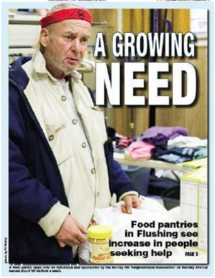

Welcome Neighbors!
The Murray Hill Neighborhood Association (MHNA) is a non-profit community service organization that assists immigrants and low-income families in the Murray Hill section of Flushing. As a faith-based association, MHNA represents a number of local churches and organizations of various ethnic and denominational affiliations. Please consider joining us in showing God’s love to our needy neighbors in Murray Hill.
Currently, MHNA volunteers and staff provide the following services at two locations:
156-15 Sanford Ave. - where Free Gospel and Asian Assembly of God Churches are located
- Daily After-school Program
- Weekly Computer Lab Classes for seniors, children, and parents
- Weekday English as a Second Language Classes
- Spring Break Children's Program
- MHNA Summer Camp
- Discounted NYS 6hr Drivers Safety Classes
- NYS Department of Aging Title V Site
Faith Hall 41-54 Murray St. - where Immanuel Community and First Presbyterian Churches are located
- Weekly Emergency Food Pantry and Clothing Distribution
- Free Children’s Enrichment Program on Saturday Mornings
- Free Monthly Immigration Clinic
- Saturday English as a Second Language Classes
- Prayer Station Ministry
- MSW Counseling for Asian prison inmates and their families
- NYS Department of Aging Title V site